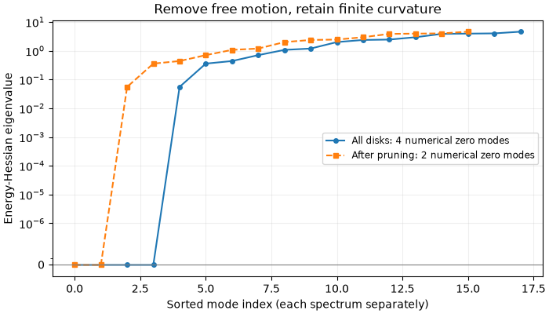
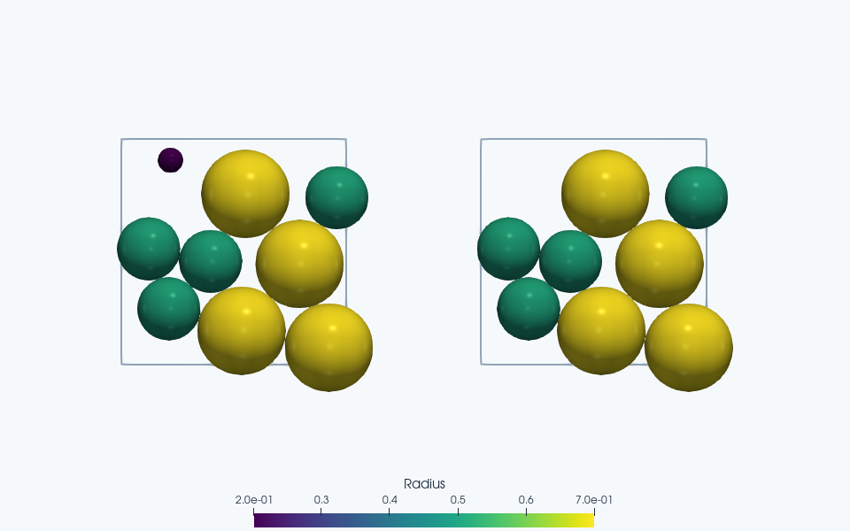

Note
Go to the end to download the full example code.
Jammed bidisperse packing: contacts, rattlers, and the dynamical matrix#
Follow a small periodic disk packing from relaxation through contact counting, rattler removal, and an energy-Hessian spectrum. Eight disks and moderate, explicit tolerances keep this workflow short; the resulting jamming fraction has strong finite-size effects and is not a bulk material constant.
The physical question is whether contacts block collective motion. We first find an equilibrated packing, then compare its contact graph with the curvature of its energy. These are complementary descriptions: counting contacts is a useful screening criterion, while the Hessian measures the effect of their actual directions and finite contact forces. A small noncontacting tracer makes rattler removal visible without requiring a long search for a particular seed.
The derivation below separates three ideas that are easily conflated: linearized contact constraints, prestress in an overlapping packing, and vibrational frequencies. We retain the mathematical discussion even though the executable calculation deliberately uses only eight load-bearing disks.
Build a reproducible, loose configuration#
import jax
jax.config.update("jax_enable_x64", True)
import jax.numpy as jnp
import matplotlib.pyplot as plt
import numpy as np
import jaxdem as jdem
from jaxdem.utils import (
count_sphere_contacts,
get_contacts,
get_sphere_rattler_ids,
remove_rattlers,
)
from jaxdem.utils.dynamical_matrix import non_bonded_hessian, zero_mode_mask
from jaxdem.utils.jamming import bisection_jam
Use consistent reduced length, mass, and stiffness units. Half the disks have radius 0.5 and half have radius 0.7, giving a size ratio of 1.4. Bidispersity discourages the simple crystalline arrangements favored by identical disks. It does not establish isotropy or remove finite-size effects.
The nominal packing fraction is the sum of disk areas divided by box area:
Overlaps do not subtract from this conventional soft-particle volume fraction. Uniform random positions can overlap initially; the jamming routine relaxes each trial before interpreting its energy.
dim = 2
N = 8
radii = jnp.array([0.5] * 4 + [0.7] * 4)
volume = jnp.pi * radii**2
initial_phi = 0.65
L = jnp.sqrt(jnp.sum(volume) / initial_phi)
state = jdem.State.create(
pos=jax.random.uniform(jax.random.PRNGKey(0), (N, dim)) * L,
rad=radii,
mass=jnp.ones(N),
volume=volume,
)
mat_table = jdem.MaterialTable.from_materials(
[jdem.Material.create("elastic", young=1.0, poisson=0.5, density=1.0)]
)
system = jdem.System.create(
state=state,
dt=0.05,
rotation_integrator_type=None,
minimizer=jdem.fire,
minimizer_kw={"dt": 0.05},
domain_type="periodic",
domain_kw={"box_size": jnp.full(dim, L)},
collider_type="naive",
mat_table=mat_table,
)
Find an equilibrated upper bound#
For a contacting pair, the spring potential uses the penetration \(\delta_{ij}=\max(0,R_i+R_j-r_{ij})\):
pe_tol classifies this energy per constituent sphere after force
relaxation. Force/torque tolerances control the separate inner minimization;
low energy alone does not imply small force or establish rigidity. Bisection
stores a lower trial with \(e\leq e_{\rm tol}\) and an upper trial with
\(e>e_{\rm tol}\), then refines their packing-fraction bracket. The
accepted upper state also lies within the specified energy band.
These moderate teaching tolerances resolve the workflow without a near-machine-precision search. Increasing the system size requires checking both relaxation convergence and sensitivity to the bracket/energy criteria.
pe_tol = 1e-8
result = bisection_jam(
state,
system,
pe_tol=pe_tol,
pe_band_factor=4.0,
n_jamming_steps=80,
packing_fraction_increment=0.04,
packing_fraction_tolerance=1e-4,
minimizer_kwargs={"max_steps": 5_000, "force_tol": 1e-7, "torque_tol": 1e-7},
verbose=False,
)
if not bool(result.converged):
raise RuntimeError(
f"Jamming failed: reason={result.reason}, "
f"minimizer_reason={result.minimizer_reason}"
)
state, system = result.jammed_state, result.jammed_system
print(
f"Finite-system phi_J = {float(result.packing_fraction):.6f}; "
f"E/N = {float(result.potential_energy):.3e}; trials = {int(result.steps)}"
)
assert pe_tol < float(result.potential_energy) <= 4.0 * pe_tol
Finite-system phi_J = 0.733047; E/N = 1.203e-08; trials = 14
Make rattler removal visible#
Add one visible, noncontacting tracer in a void. The eight-disk search above is unchanged; this extra free disk deliberately contributes floppy motion. A deterministic grid search finds a void using periodic minimum images.
box = np.asarray(system.domain.box_size)
axis = (np.arange(16) + 0.5) / 16
candidates = np.stack(np.meshgrid(axis * box[0], axis * box[1]), axis=-1).reshape(-1, 2)
delta = candidates[:, None, :] - np.asarray(state.pos)[None, :, :]
delta -= box * np.round(delta / box)
clearance = np.min(np.linalg.norm(delta, axis=-1) - np.asarray(state.rad), axis=1)
void_index = int(np.argmax(clearance))
# Keep its actual radius below the measured clearance, so a visible tracer
# still contributes no contacts or load to the jammed network.
tracer_radius = min(0.2, 0.8 * float(clearance[void_index]))
if tracer_radius <= 0:
raise RuntimeError("No noncontacting tracer position was resolved.")
state = jdem.State.add(
state,
pos=candidates[void_index : void_index + 1],
rad=[tracer_radius],
mass=[1.0],
volume=[np.pi * tracer_radius**2],
)
N = state.N
system = jdem.System.create(
state=state,
domain=system.domain,
mat_table=mat_table,
rotation_integrator_type=None,
collider_type="naive",
)
state, system = jdem.System.initialize(state, system)
Count contacts and screen for rattlers#
get_contacts() records pairs whose force or
torque is nonzero. Here contacts have only normal spring forces, so this is
the force-bearing overlap network. A pair exactly at zero overlap does not
contribute a spring force and is absent from this snapshot.
count_sphere_contacts() returns a count
\(z_i\) for each disk. A unique pair contributes once to each endpoint:
Reuse one contact snapshot for all diagnostics so counts and rattler IDs describe exactly the same configuration, without reevaluating forces.
state, system, contacts = get_contacts(state, system)
state, system, counts = count_sphere_contacts(state, system, contacts=contacts)
state, system, rattler_ids, non_rattler_ids = get_sphere_rattler_ids(
state, system, contacts=contacts
)
print("Contacts per disk:", np.asarray(counts))
print("Distinct contacts:", int(np.asarray(counts).sum()) // 2)
print("Rattler disk IDs:", np.asarray(rattler_ids))
assert int(counts[-1]) == 0
assert N - 1 in np.asarray(rattler_ids)
print(f"Isolated tracer radius: {tracer_radius:.3f}")
Contacts per disk: [4 4 4 3 4 3 3 5 0]
Distinct contacts: 15
Rattler disk IDs: [8]
Isolated tracer radius: 0.200
A rattler can move without being held by the load-bearing network. The
default graph screen zc = dim + 1 removes disks with fewer than three
force-bearing contacts in 2D. Fewer contacts cannot generically surround a
repulsive disk, although even three contacts can all lie on the same side.
Removing one disk may leave its neighbors below the threshold, so the
utility updates counts and repeats until the surviving set stops changing.
This geometric motivation explains the threshold; it is not a proof that
the surviving graph is rigid.
Contact constraints and linearized counting#
Let \(q\in\mathbb R^{dN}\) contain the disk centers and let \(B_{c\alpha}=\partial r_c/\partial q_\alpha\) be the contact Jacobian. Each row maps a displacement to the first-order change of one contact distance. With \(r_B=\operatorname{rank}B\), rank-nullity gives
Here \(n_0=\dim\ker B\) counts motions that preserve all contact distances to first order; \(n_s=\dim\ker B^T\) counts independent self-stress patterns. This identity concerns the linearized constraint network. Its nullity equals that of an unstressed spring matrix \(B^T K B\) when all contact stiffnesses in \(K\) are positive.
For one disk with neighbors held fixed, at most \(k\) independent normal constraints leave at least \(\max(0,d-k)\) unconstrained first-order directions. Equality requires independent contact normals. Summing such local estimates double-counts shared constraints and cannot determine collective modes. Finite contact forces also add curvature, as the energy Hessian below makes explicit.
Measure the energy-Hessian spectrum#
non_bonded_hessian() differentiates
the total pair energy with respect to disk-center coordinates. At an
equilibrated configuration \(q_0\),
The linear term vanishes at exact force balance. Here the matrix has
shape (dim*N, dim*N). For a contact at positive separation, with unit
normal \(n\) and relative displacement \(u_{ij}\), its local block is
The positive normal term penalizes changes of distance. The negative transverse term comes from the existing compressive force: a transverse displacement can increase separation and reduce an overlap. In full coordinates the same chain rule gives
The second term is the prestress contribution. This is why a direction in
ker(B) need not be an exact zero mode of the finite-overlap Hessian.
A resolved negative eigenvalue indicates an energy-lowering direction at
force balance; positive eigenvalues measure quadratic restoring curvature.
Mechanical vibrations satisfy \(H u=\omega^2 M u\), where \(M\) repeats each disk’s mass on its coordinate entries. The mass-weighted dynamical matrix is \(M^{-1/2}HM^{-1/2}\). We report the energy Hessian directly; unit masses make the numerical spectra coincide in these units.
state, system, H = non_bonded_hessian(state, system)
H_np = np.asarray(H)
# Equality of mixed derivatives makes the mathematical Hessian symmetric.
# Explicit symmetrization removes roundoff-sized assembly asymmetry before
# using the real symmetric eigensolver; it does not correct a physical mode.
H_np = 0.5 * (H_np + H_np.T)
eigenvalues = np.linalg.eigvalsh(H_np)
Numerical zero modes rarely appear as literal floating-point zeros. Their
scale is related to machine precision times the spectral scale, whereas
genuine soft modes can also be small. zero_mode_mask looks for a large
ratio between successive eigenvalue magnitudes, after grouping values at
roundoff scale. Its mask preserves the original eigenvalue ordering and
can therefore also select matching eigenvectors. Inspect the spectrum if
there is no clear gap; changing tolerance does not prove a mode is floppy.
zero_mask = np.asarray(zero_mode_mask(eigenvalues))
scale = max(float(np.max(np.abs(eigenvalues))), 1.0)
negative = (eigenvalues < -1e-7 * scale) & ~zero_mask
print("Lowest Hessian eigenvalues:", eigenvalues[:8])
print("Numerical zero modes:", int(zero_mask.sum()))
print("Resolved negative modes:", int(negative.sum()))
Lowest Hessian eigenvalues: [-1.66883064e-18 0.00000000e+00 0.00000000e+00 4.51560216e-16
5.51741398e-02 3.56746780e-01 4.38188220e-01 7.03383209e-01]
Numerical zero modes: 4
Resolved negative modes: 0
A common displacement of every disk leaves pair separations unchanged:
Thus dim global translations are exact symmetries of this periodic
pair-potential problem. A background trap or fixed wall would change that
conclusion. We check these vectors directly rather than relying only on
a gap-based zero-mode classification.
translations = np.tile(np.eye(dim), (N, 1))
np.testing.assert_allclose(H_np @ translations, 0.0, atol=1e-8 * scale)
Remove rattlers and re-analyze#
Two ID spaces are in play. get_sphere_rattler_ids returns particle-row
indices, while remove_rattlers expects clump IDs. A smooth disk is a
one-member clump; the explicit state.clump_id lookup remains correct
even if a preceding construction step has relabeled or reordered particles.
remove_rattlers() drops those bodies and returns
a matching initialized System for the reduced particle count. It also
updates search geometry and indexing; reusing the old System would lose
those contracts. We recompute the Hessian because its coordinate space has
changed. A fully disconnected disk contributes dim exactly free
translations; its removal eliminates that block without changing the
contacting network. The deliberately isolated tracer makes this case
explicit. Removing particles with residual contacts can change the finite
spectrum too, so spectrum preservation is not a general pruning theorem.
rattler_clump_ids = state.clump_id[rattler_ids]
state_nr, system_nr = remove_rattlers(state, system, rattler_clump_ids)
Recompute the spectrum after pruning#
The full spectrum included two translations of the disconnected tracer. Those disappear from the reduced coordinate space. Compare the remaining low eigenvalues with the required global translations. Additional near-zero or negative modes require inspection of geometry and numerical tolerances; graph pruning alone cannot certify the remaining network’s stability.
state_nr, system_nr, H_nr = non_bonded_hessian(state_nr, system_nr)
H_nr_np = np.asarray(H_nr)
H_nr_np = 0.5 * (H_nr_np + H_nr_np.T)
eigenvalues_nr = np.linalg.eigvalsh(H_nr_np)
zero_mask_nr = np.asarray(zero_mode_mask(eigenvalues_nr))
print("Disks after rattler removal:", state_nr.N)
print("Lowest remaining eigenvalues:", eigenvalues_nr[:8])
print("Remaining numerical zero modes:", int(zero_mask_nr.sum()))
print("Global translations required by symmetry:", dim)
# An equilibrated, rigid remaining network has only the translational null
# space. Extra soft or negative modes require investigation; deleting graph
# rattlers alone does not certify rigidity.
Disks after rattler removal: 8
Lowest remaining eigenvalues: [-3.60632274e-16 9.31591773e-16 5.51741398e-02 3.56746780e-01
4.38188220e-01 7.03383209e-01 1.07047848e+00 1.19123980e+00]
Remaining numerical zero modes: 2
Global translations required by symmetry: 2
Connect contact screening to the measured spectrum#
The isolated tracer has no force-bearing contacts and adds two free translations to the full Hessian. Its removal reduces the number of numerical zero modes while retaining the load-bearing network’s finite curvatures. Each spectrum has its own ascending mode index because its coordinate space has a different dimension. The signed scale preserves negative curvature and uses a linear neighborhood around zero.
scene_states = {"Before rattler removal": state, "After rattler removal": state_nr}
scene_systems = {"Before rattler removal": system, "After rattler removal": system_nr}
fig, ax = plt.subplots(figsize=(7, 4), layout="constrained")
ax.plot(
np.arange(len(eigenvalues)),
eigenvalues,
"o-",
markersize=4,
label=f"All disks: {zero_mask.sum()} numerical zero modes",
)
ax.plot(
np.arange(len(eigenvalues_nr)),
eigenvalues_nr,
"s--",
markersize=4,
label=f"After pruning: {zero_mask_nr.sum()} numerical zero modes",
)
ax.set_yscale("symlog", linthresh=1e-7 * scale)
# Keep zero readable by omitting log ticks inside the linear neighborhood.
ax.set_yticks(
[tick for tick in ax.get_yticks() if tick == 0 or abs(tick) >= 1e-7 * scale]
)
ax.axhline(0.0, color="0.5", linewidth=0.8)
ax.set(
xlabel="Sorted mode index (each spectrum separately)",
ylabel="Energy-Hessian eigenvalue",
title="Remove free motion, retain finite curvature",
)
ax.grid(alpha=0.2)
ax.legend(fontsize="small")
plt.show()


ParaView rendering of this run’s VTKWriter output.
Left to right: Before rattler removal; After rattler removal.
Total running time of the script: (0 minutes 15.478 seconds)